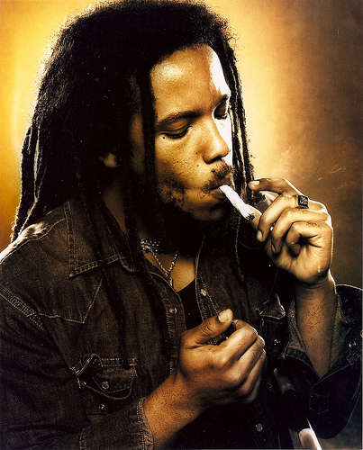

Élete és Karrierje
Stephen Robert Nesta Marley jamaicai énekes, zeneszerző és producer, a híres Bob Marley fia.
Született: április 20, 1972.

Stephen Marley a Marley család zenei hagyományait folytatva, kiemelkedő karriert épített ki a reggae és a
zene világában. A Raggamuffin, a Grammy és más rangos díjak elismeréseit gyűjtötte be pályája során.
Zenei Alkotások
Stephen Marley jamaicai énekes, zeneszerző és producer, aki számos sikeres albumot hozott létre a reggae és más zenei műfajokban. Ő 1972-ben született, és zenei örökségét Bob Marley fia képviseli. Az egyedülálló művészeti stílusa és kreativitása révén számos zenészi és kreatív eredményt ért el.
Néhány kulcsfontosságú jellemzője és hatása a következők:
- Reggae Műfajban Betöltött Szerepe: Stephen Marley erőteljesen kapcsolódik a reggae műfajhoz és méltó örökösévé vált édesapja gyökereinek.
- A Reggae Modernizálása: Nem csupán az örökségéből merít, hanem saját egyedi hangzásvilágát is hozza a reggae műfajába, modern elemekkel gazdagítva azt.
- Zenei Kollaborációk: Széles körű együttműködéseket vállal más művészekkel, hozzájárulva a zenei sokszínűséghez és az együttműködés erejének megmutatásához.
- Szövegi Tartalom és Társadalmi Üzenetek: Marley család hagyományaiban állva, szövegei gyakran tartalmaznak társadalmi üzeneteket, tükrözve a kultúra és társadalom kihívásait.
- Zenei Produkció: Kiváló producerként is elismert, és sikerei segítik más előadókat a kifinomult hangzásvilág elérésében.